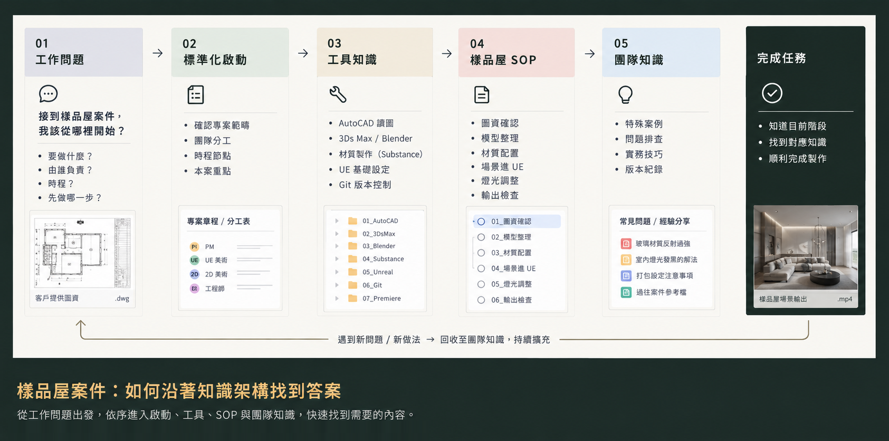

案例 06 / 實務架構 / 知識查找
專案知識架構以任務為入口的資訊設計
如何讓成員從「我要完成什麼」找到需要的方法？我將專案啟動、案件 SOP、工具知識與團隊經驗，整理為能相互連結的資訊架構。
使用者 UE 美術、新人與跨角色專案成員
我的工作 任務分類、內容模組與知識關聯整理
交付內容 專案知識架構、案件 SOP 與工具知識模組
目前狀態 已完成內部整理與建置；查找效率尚未量化 INFORMATION ARCHITECTURE / 實務架構 專案啟動 → 任務 SOP → 工具知識 → 團隊經驗
設計重點：以工作情境串起查找入口與知識模組
01 / 使用者問題 02 / 情境與限制 03 / 問題拆解 04 / 設計決策 05 / 流程與交付 06 / 結果與驗證 01 / 使用者問題
真正開始做案件時，第一步該從哪裡開始，下一步該往哪裡走？
團隊原本並不缺資料。專案規則、軟體操作、模型與材質處理方式、UE 製作流程、案件 SOP 與成員經驗都已經存在，我自己也持續將 UE 操作、問題解法與專案經驗整理在 Notion，累積超過 117 則知識紀錄。
問題是這些知識分散在不同檔案、舊專案與個人經驗中。當成員真正進入案件時，需要處理的是一連串問題：這個案子怎麼開始、我要做什麼、該用什麼工具、前後流程怎麼接，以及遇到特殊狀況時該去哪裡找答案。
因此，單純增加文件數量，並不能降低工作的理解成本。
案件執行視角：標準化啟動 → 案件流程SOP → 軟體工具通用知識模組 → 團隊內部知識
02 / 情境與限制
一個案件同時跨越角色、工具與製程，知識也跟著被切散。 一個完整專案從開始到交付，會經過範疇確認、團隊分工、時程安排、圖資理解、模型與材質整理、UE 製作、工程功能、版本控制與影片輸出等不同階段。
參與者也不只有 UE 美術，還可能包含 主要負責人、UE 美術、2D 美術與工程師 。不同角色會在不同時間需要不同知識。
如果資訊只依照軟體、檔案或個人習慣存放，使用者必須先知道「答案在哪裡」，才能開始找答案，新人或不熟悉該流程的成員，反而最難使用這些資料。
03 / 問題拆解
缺少的是一套能回答工作問題的知識結構。 我把實際工作中反覆出現的查找與判斷需求，整理成五個問題：
「這個案子怎麼開始？」
「我要製作什麼？」
「我要用什麼工具、怎麼處理？」
「前一步完成後，下一步要做什麼？」
「遇到特殊問題時，要去哪裡找答案？」
判斷結果： 需要整理的是「完成一個案件時，人會在什麼階段需要哪些知識」。
04 / 設計決策
從「依文件與軟體分類」，轉為「依工作流程與任務情境組織」。 如果只按照 AutoCAD、Blender、UE、Git 等工具分類，確實容易歸檔，但使用者仍然必須自己理解：我現在為什麼需要這個知識？它屬於案件的哪一步？接下來又該做什麼？
因此，我改以實際工作過程作為主要結構：標準化啟動 → 案件流程SOP → 軟體工具通用知識模組 → 團隊內部知識
設計方案比較 點選方案，查看限制與設計取捨。
依文件／軟體分類 依工作流程與任務情境組織採用方案
方案做法 依 AutoCAD、Blender、UE、Git、Photoshop 等軟體或文件類型建立分類。
適用優勢 結構單純，資料容易歸檔與維護。
限制與代價 使用者必須先知道自己要找哪套工具，無法直接回答「這個案件現在該做什麼」。
方案做法 案件SOP決定此刻需要哪個工具知識模組；工具知識支援案件SOP被執行。
適用優勢 使用者可以從「我現在正在做什麼」出發，不用把「答案一次全部理解完」。
限制與代價 同一項知識可能同時服務不同案件，需要建立交叉連結，並持續維護流程與內容的一致性。
為什麼採用「依工作流程與任務情境組織」？ 因為團隊真正提出的問題通是：
「我現在這一步要怎麼做？」
知識架構因此不只負責保存資料，也必須幫助使用者判斷目前位置、需要的知識，以及下一步行動。
05 / 流程與交付
將完成一個案件需要的知識，整理成四個可以持續擴充的區塊。 整體架構依照實際工作需求，分為四個部分：
「這個案子要做什麼？由誰完成？什麼時候完成？」
確定專案範疇
選擇專案團隊
制定建立分工與時程基準
釐清目標導向
「不同類型的工作，實際應該按照什麼流程完成？」
依實際產出建立案件 SOP：
任務導向SOP決定此刻需要哪個工具知識模組；工具知識支援案件SOP被執行。使用者可以從案件SOP進入流程，再沿著流程找到需要的工具、規範與製作方法。
「完成工作需要哪些工具與軟體？」
建立跨製程的基礎工具知識：
02 SketchUp 模型整理
07 Premiere 影片製作
最後保留一個能持續累積團隊經驗的區域。不是所有工作知識都能事先寫成標準 SOP。實際製作中仍會出現新的處理方式、特殊案例、工具技巧與問題排查經驗，因此將成員分享的知識持續收進架構，再依實際使用情境連回相關工具或案件流程。讓知識系統不只保存「標準做法」，也能逐步吸收團隊在工作中產生的新經驗。

01 確認案件
02 選擇 SOP
03 查找工具
04 執行任務
05 補充經驗
06 / 結果與驗證
讓「我要去問誰？」逐漸轉成「我現在在哪個階段，應該查哪一層知識？」 這套架構把原本散落在軟體、文件、舊案件與個人經驗中的內容，重新放回實際工作的脈絡：
這套架構讓使用者從專案條件出發，選擇案件 SOP，再找到對應工具方法與團隊經驗。它也提供新人上手流程所需的知識入口：新人指引安排使用順序，知識架構承接每一步需要查找的內容。
它同時成為 Learning Path 的知識基礎。
Learning Path 負責安排新人「先學什麼、再學什麼」；知識架構則提供每一個學習與工作階段背後可以查找、理解與實際使用的內容。
目前可確認的範圍： 此為團隊內部實務知識與案件流程的整理與建置，尚未以量化方式驗證查找效率。
後續可以透過實際工作任務驗證：是否能從案件階段快速找到正確內容、是否能判斷應使用哪套 SOP、是否減少重複詢問，以及新增知識能否穩定放回既有架構。 讓知識架構是一套會隨著團隊工作持續累積的系統。
標準化啟動 → 案件流程SOP → 軟體工具通用知識模組 → 團隊知識累積
PROPOSED NEXT STEP / 待執行 下一輪如何驗證？
任務 從一個案件任務找到正確 SOP 與需要的工具方法。
觀察 查找時間、錯誤入口、仍須向同事詢問的問題。
迭代方向 如果分類名稱與使用者語言不一致，先調整命名和入口。 返回作品列表